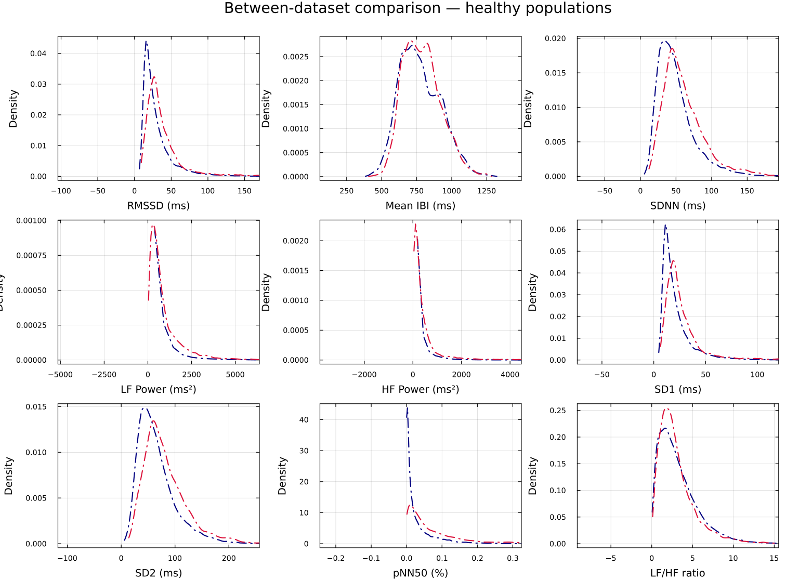

Is My Data Normal?
Motivation
An HRV number in isolation means little. Is an SDNN of 74 ms high, low, or unremarkable? The honest answer is "compared to what?" This use case builds the missing reference frame: a normative prior fitted from large open normal-sinus-rhythm datasets, against which any new window can be scored as a quantile z-equivalent — a single, interpretable "how unusual is this?" number per feature.
Method
The normative reference is fitted once, from two PhysioNet normal-sinus-rhythm collections pooled together (nsrdb + nsr2db). Each recording is cut into 360-beat windows with a 120-beat stride, every window is scored through the 53-feature registry, and each feature's pooled distribution is fitted to an analytical family (Normal, Gamma, Beta, or LogNormal, chosen per feature). The result is 61 715 pooled healthy windows summarised as one fitted prior distribution per feature. The fitted priors ship in docs/normative_priors.csv; a few examples:
| Feature | Family | Fitted prior | n windows |
|---|---|---|---|
mean | Normal | Normal(779.63, 146.81) | 61 715 |
sdnn | Gamma | Gamma(3.795, 14.03) | 61 715 |
rmssd | Gamma | Gamma(2.400, 14.22) | 61 715 |
pnn50 | Beta | Beta(0.3211, 3.563) | 61 715 |
lf_hf_ratio | LogNormal | LogNormal(0.852, 0.869) | 61 715 |
Given a fitted prior with CDF $F$ for a feature, a new value $x$ is scored as a quantile z-equivalent:
\[z = \Phi^{-1}\!\big(F(x)\big)\]
where $\Phi^{-1}$ is the standard-normal quantile function. This maps any distribution family onto a common $\sigma$-scale without assuming symmetry: a value at the prior's median scores $z = 0$, one at its 84th percentile scores $z \approx +1$. The same idea, applied to a user's own history instead of the population, gives the personal z-equivalent baseline_z used in the live tool.
Because the prior families are asymmetric where the biology is asymmetric, the dispersion bands drawn around each feature are distribution-aware central quantile intervals — the 68.27 % / 95.45 % / 99.73 % intervals standing in for ±1σ / ±2σ / ±3σ — rather than naive mean ± σ bands. The frequency-domain features default to a Welch periodogram on the resampled RR series (config["freq_method"] == :welch), with the raw unevenly-sampled Lomb–Scargle periodogram (Lomb, 1976), (Scargle, 1982) available as an alternative (config["freq_method"] = :lomb_scargle); the whole panel follows the standard HRV measurement conventions (Task Force, European Society of Cardiology / North American Society of Pacing & Electrophysiology, 1996).
Validity check: do the two healthy datasets agree?
Before trusting a pooled prior, the two source datasets are compared directly. The between-dataset KDE overlay shows nsrdb and nsr2db tracing nearly the same feature distributions — evidence that "healthy" is a stable reference here and the pooling is legitimate.

Result: a live "how normal is this?" overlay
The scoring is wired into a real-time visualization. default_normative() draws the standard live HRV panels and overlays, on every panel, the personal-baseline percentile band (shaded low–high with a median line) plus, in each panel title, the current value's percentile and z-equivalent. So as beats stream in, each feature is continuously placed against the reference — the operational answer to "is my data normal, right now?"
The offline counterpart, plot_normative_kde_comparison, renders the same idea as a small-multiples grid: one KDE per feature, the fitted prior density overlaid as a dashed curve, and the σ-equivalent bands shaded behind it. The meditation & resonant-breathing use case shows this grid applied to two real cohorts.
These priors are descriptive references from healthy cohorts, not clinical thresholds. A large $|z|$ means "unusual relative to this reference population," not "abnormal" in any medical sense.
Reproduce / where the data lives
- Fitted priors:
docs/normative_priors.csv(family, parameters, KS p-value, andnper feature;datasets = nsrdb+nsr2db,window_size = 360,stride = 120). - Scoring API:
HeartRateLab.Features.normative_prior(name)returns the fittedDistribution; the quantile z-equivalent isΦ⁻¹(cdf(prior, x)). - Live overlay:
HeartRateLab.Visualization.default_normative(; low=10, high=90)(needs GLMakie + an LSL RR stream; personal-baseline artifact built bytest/tools/generate_personal_baseline.jl). - Offline plot:
HeartRateLab.Visualization.plot_normative_kde_comparison. - Dataset collection:
test/tools/collect_normative_datasets.jl.
See the Visualization page for the full plotting API and the HRV Variable Zoo for each feature's normative distribution in detail.